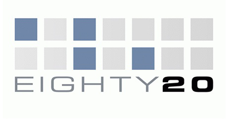
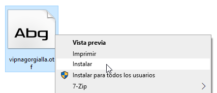
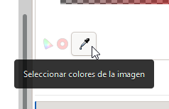
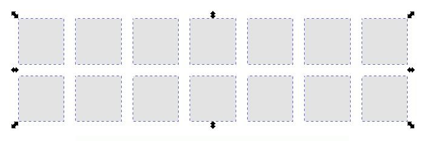
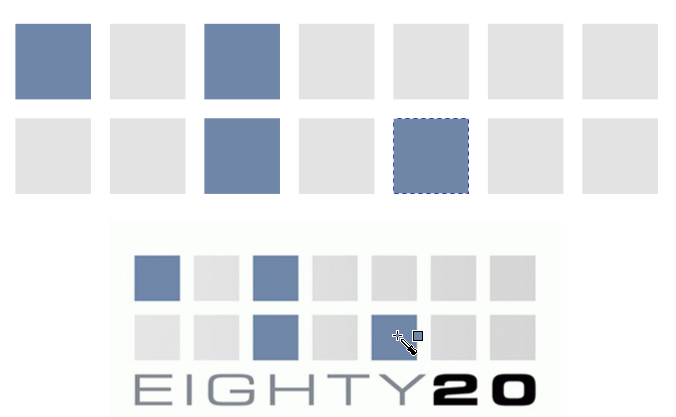
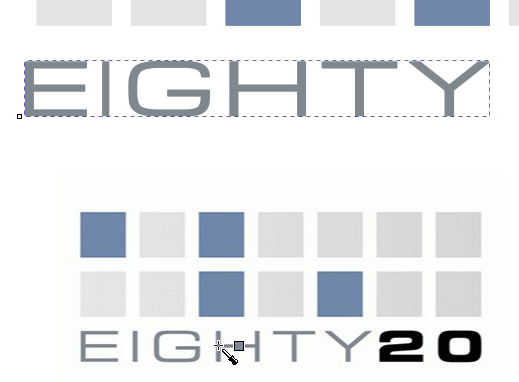
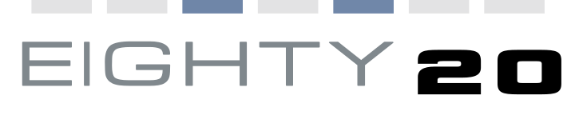
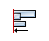
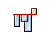

4. Logotipo Eighty 20¶
En este ejercicio utilizaremos la operación de distribuir elementos y la instalación de nuevas fuentes de texto para componer el logotipo.
Primero descargaremos las siguientes fuentes de texto.
Fuente de texto Vipnagorgialla boldUna vez descargadas, podemos instalarlas pinchando sobre cada uno de los archivos con el botón derecho del ratón y seleccionando instalar.
Ahora abriremos un nuevo documento con Inkscape.
A continuación crearemos un cuadrado con la herramienta de dibujar cuadrados y rectángulos
 y cambiamos su tamaño
en la barra superior a 20 por 20 milímetros.
y cambiamos su tamaño
en la barra superior a 20 por 20 milímetros.
Para continuar copiaremos el logotipo que aparece en el inicio de esta práctica y lo pegaremos dentro de Inkscape.
Seleccionamos nuevamente el cuadrado y escogemos en el menú
Objeto... Relleno y borde....Ahora vamos a utilizar la herramienta de Seleccionar colores de la imagen
Seleccionando el color de un cuadrado claro dentro de la imagen del logotipo copiada.

Una vez que el cuadrado tiene el color deseado, vamos a duplicarlo otras 13 veces más presionando a la vez las teclas Control+D 13 veces.
 + x 13
+ x 13En este momento solo estará seleccionada la última copia que hemos duplicado, de forma que tenemos que seleccionar con el ratón todos los 14 cuadrados.
Una vez seleccionados, vamos a distribuir los cuadrados en 2 filas y 7 columnas desde el menú
Objeto... Ordenar...con las opcciones siguientes.2 Filas y 7 Columnas
Fijar espaciado a 5 milímetros en X y 5 milímetros en Y
Y pulsamos en el botón de ordenar.

El resultado será el siguiente.
Desde el menú
Objeto... Relleno y borde..., vamos a ir seleccionando el color más oscuro de algunos cuadrados con la herramienta 'Seleccionar colores de la imagen' igual que hicimos anteriormente con el color más claro para el primer cuadrado.Para continuar vamos a escribir con la herramienta de crear texto
 la palabra en mayúsculas EIGHTY debajo de los cuadrados.
la palabra en mayúsculas EIGHTY debajo de los cuadrados.Ahora cambiaremos el tipo de letra a Acens Normal en la barra superior.
También cambiaremos el espaciado entre letras a 10.
Una vez escrito, vamos a pinchar en la herramienta de seleccionar
 y cambiaremos el tamaño del texto
a 15 milímetros de alto (H)
por 123 milímetros de ancho (W).
y cambiaremos el tamaño del texto
a 15 milímetros de alto (H)
por 123 milímetros de ancho (W).Para terminar, en el menú
Objeto... Relleno y borde...elegiremos que la fuente de texto no tenga color de trazo y en el relleno escogeremos el mismo color que la fuente del logotipo con la herramienta Seleccionar colores de la imagen.Continuamos realizando los mismos pasos para escribir el texto 20 con el tipo de letra Vipnagorgialla Bold, con espaciado entre letras de 10.
Con la herramienta de seleccionar

cambiaremos el tamaño del texto
a 15 milímetros de alto (H)
por 43 milímetros de ancho (W).Una vez escrito el texto, vamos a moverlo a su sitio exacto. Comenzamos seleccionando el cuadro inferior izquierdo y luego, apretando la tecla mayúsculas, seleccionamos también el texto EIGHTY.
En el menú
 Objeto... Alinear y Distribuir...escogemos la opción de alinear lados izquierdos y alinear lado superior al borde inferior del ancla.La palabra EIGHTY estará alineada con los cuadros.

Ahora seleccionaremos solo el texto EIGHTY y con el menú
Objeto... Transformar...en la pestaña Mover escogeremos mover 6 milímetros en vertical hacia abajo de movimiento relativo. Pulsando el botón Aplicar, el texto quedará colocado en su sitio.
Para mover el número 20 seleccionaremos el cuadro de abajo a la derecha junto al número 20 (pinchando sobre ellos mientras se presiona la tecla mayúsculas).
En el menú
Objeto... Alinear y Distribuir...escogemos la opción de alinear lados derechos y alinear lado superior al borde inferior del ancla.Seleccionamos solo el texto 20 y con el menú
Objeto... Transformar...en la pestaña Mover escogeremos mover 6 milímetros en vertical hacia abajo de movimiento relativo. Pulsando el botón Aplicar, el texto quedará colocado en su sitio y el logotipo estará terminado.